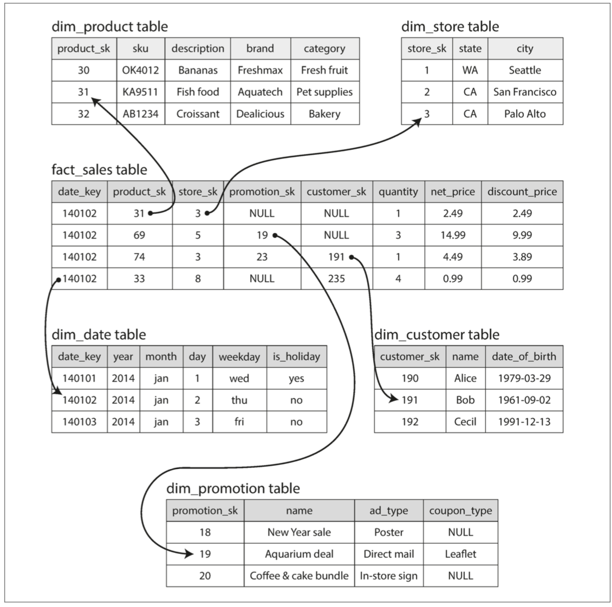

数据存储与检索
存储引擎分为两大类：针对 事务处理（OLTP） 优化的存储引擎和针对 在线分析（OLAP） 优化的存储引擎
对于 OLTP ，两派主流的存储引擎
- 日志结构的存储引擎：只允许追加到文件和删除过时的文件，但不会更新已经写入的文件，如 LSM 树、SSTables；
- 原地更新学派：面向页的存储引擎，硬盘视为一组可以覆写的固定大小的页面，如 B-tree；
对于 OLAP：主要的是列示存储、压缩，加速查询；
- 大量行中顺序扫描时，索引的重要性就会降低很多，以最大限度地减少查询需要从硬盘读取的数据量。
作为应用系统开发人员，为什么需要关注数据库内部的存储和检索呢？
- 不会从头实现存储引擎，而是从现有的存储引擎中选择；
- 为了特定的工作负载而对数据库调优时，需要对存储引擎的底层机制有了解；
数据库核心：数据结构
最简单的数据库，由两个 Bash 函数实现：
- 由纯文本格式进行存储，key 和 value 由 逗号 分隔；
# !/bin/bash
# 将文件存储为 db_func.sh
db_set() {
echo "$1,$2" >> database
}
db_get() {
grep "$1," database | sed "s/^$1,//" | tail -n 1
}
使用示例：多次设置同样的key，旧版本的值不会被覆盖，获取时返回最新的值
$ source db_func.sh
$ db_set 123 '{"name:" : "xliu"}'
$ db_set 456 '{"name": "book"}'
$ db_get 123
{"name:" : "xliu"}
日志：仅支持追加式更新的数据文件，可以是文本格式或者二进制格式。
性能分析：
db_set追加到文件，性能很好（很难超过简单的追加文件的性能）；db_get的性能跟记录数呈线性关系，复杂度O(N)；
如何高效查找数据库中特定键的值？新的数据结构：索引
- 保留额外的元数据，作为路标，定位目标数据；
- 适当的索引可以加速读取查询，但每个索引都会减慢写入速度；
- 应用开发人员或者DB管理员，根据查询模式，手动建立索引；
哈希索引
针对 key- value 类型的索引，单点查询。
通过 hashmap ，将每个键映射到文件中的特定的字节偏移量，如下图所示：
-
Bitcask 的核心做法\(^{[1]}\)，其是 Riak 中默认的存储引擎；
-
查找只需要一次磁盘寻址，可将数据加载到内存，如果数据在文件系统缓存，则不需要磁盘I/O；

适合于每个键的值频繁更新的场景，但 key 的数量不多，内存可以放下；
- 如 key是猫的视频URL，value 是它播放次数（更新时，先从磁盘获取数据，再 +1 后写盘）；
如上所述，只追加到一个文件，如何避免最终用户用尽磁盘空间？
- 一个文件不能执行压缩，将其旧的数据删除，节省磁盘空间；
- 将日志文件分解成一定大小的段，文件达到一定大小是关闭，后续写入到新的文件中；
- 对于关闭的段文件，执行压缩，丢弃重复的键，只保留最新的数据；
- 段压缩后文件可能很小，可以将多个段合并成一个大的段；
- 压缩和合并后台异步执行，如下图所示：
- 运行时，读取采用旧的段文件，写入到新的段文件；
- 运行结束后，读写都采用新的段文件；

每个段都有自己的内存 hashmap，将键映射到文件偏移量：
- 查找时，先查找最新的段的 hashmap，不存在则查找第二最新的段，以此类推（段的数量不能多）；
实现落地过程的其它细节：
- 文件格式：CSV 不是最佳格式，更快更简单的是二进制格式：长度+数据
- 删除记录：墓碑标记，认为某个键被删除；
- 崩溃恢复：内存 hashmap 的重新构建，可以扫描段文件从头构建，或者保存每个段的 hashmap 的快照；
- 快照是针对不再写入的段，如果正在写入的段，是否重头构建（保证一致性，每次更新hashmap，都保存快照则性能太慢）
- 部分写入：数据库随时会崩溃，如将记录追加到日志过程中。Bitcask 文件包括校验值，可以发现损坏部分并丢弃；
- 并发控制：通常采用一写多读的形式；
采用追加写日志的方式似乎很浪费空间，为什么不采用原地更新用新值替换旧值的方式？
- 顺序写比随机写要快的多，特别是在磁盘上。对于SSD，顺序写入也是合适的\(^{[2]}\)；
- 对于追加写，其并发和崩溃恢复要更简单，如当一个数据值被更新的时候发生崩溃，不用担心文件里将会同时包含旧值和新值各自的一部分;
- 合并旧段的处理也可以避免数据文件随着时间的推移而碎片化的问题；
- 原地更新，如果值的大小不一样，其处理相对于追加写要复杂；
哈希表索引的局限性：
- 哈希表必须全部放入内存。虽然可以在磁盘上维护 hash map，但很难使得磁盘上的 hash map表现良好\(^{[3]}\)；
- 区间查询效率不高，只能通过单个查找的形式查询每个键；
SSTables 和 LSM-Tree
要求文件中的key-value对的顺序按键排序，这个格式称为 排序字符串表（Sorted String Table），简称 SSTable。
相比于哈希索引的日志段，其优势：
-
合并段更加高效，即使文件远大于可用内存，类似合并排序的算法，相同的键保留最新的段中的值；
-
在文件中查找特定的键时，不需要内存中保存所有键的索引；但仍需要保存稀疏索引记录一些键的偏移量
-
每几千字节的段文件有一个键就足够了，因为几千字节可以很快地被扫描完1

- 读请求往往需要扫描请求范围内多个key-value对，可以将记录分组为块，并写入磁盘前进行压缩（如上图阴影部分），索引内容指向压缩块开头，减少I/O带宽占用；
构建和维护 SSTables
如何保证数据是排好序的？
- 采用基于内存的树形数据结构（如红黑树和AVL树），虽然基于磁盘的B树也可以（其效率慢）；
存储引擎的基本工作流程：
- 新写入时，将其添加到内存中的平衡树数据结构（例如红黑树）。这个内存树有时被称为 内存表（memtable）；
- 当 内存表大于某个阈值（通常为几兆字节）时，将其作为 SSTable 文件写入硬盘 ；新的 SSTable 文件将成为数据库中最新的段。当该 SSTable 被写入硬盘时，新的写入可以在一个新的内存表实例上继续进行。
- 收到读取请求时，首先尝试在内存表中找到对应的键，如果没有就在最近的硬盘段中寻找，如果还没有就在下一个较旧的段中继续寻找，以此类推；
- 后台线程周期性执行段合并与压缩过程，合并段文件并将已覆盖和删除的数据丢弃；
如果数据库崩溃，最近的写入（在内存但未写入磁盘）将会丢失：
- 磁盘上保留单独的日志（WriteAheadLog），每个写入会先追加到该日志，再写入内存；
- 该日志无需排序，用于崩溃后恢复内存表，当内存表写入 SSTable 时，相应的日志可以被丢弃；
从 SSTable 到 LSM
上述算法本质上是 LevelDB 和 RocksDB 这些键值存储引擎库所使用的技术。在 Cassandra 和 HBase 中也使用了类似的存储引擎，受到 Google Bigtable 论文的启发。
这种索引结构最早由 Patrick O'Neil 等人发明，且被命名为日志结构合并树（或 LSM 树）\(^{[4]}\)，它是基于更早之前的日志结构文件系统\(^{[5]}\)来构建的。基于这种合并和压缩排序文件原理的存储引擎通常被称为 LSM 存储引擎。
Apache Lucene，是一种全文搜索的索引引擎，在 Elasticsearch 和 Solr 被使用，它使用类似的方法来存储它的关键词词典\(^{[6, 7]}\)：
- 键是 单词（term），值是所有包含该单词的文档的 ID 列表
- 从词语到记录列表的这种映射保存在类似于 SSTable 的有序文件中，并根据需要在后台执行合并\(^{[8]}\)
性能优化
让存储引擎在实践中表现良好涉及到大量设计细节：
- 布隆过滤器（Bloom filters）：当查找数据库中不存在的键时，LSM 树算法可能会很慢（检查内存表和所有的段）；
- SSTables 被压缩和合并的顺序和时间
size-tiered：较新和较小的 SSTables 相继被合并到较旧的和较大的 SSTable 中，如 HBase，Cassandra 。leveled compaction：key （按照分布范围）被拆分到较小的 SSTables，而较旧的数据被移动到单独的层级（level），这使得压缩（compaction）能够更加增量地进行，并且使用较少的硬盘空间。如 LevelDB，RocksDB，Cassandra 。
B-tree
B 树将数据库分解成固定大小的 块（block） 或 分页（page），传统上大小为 4KB（有时会更大），并且一次只能读取或写入一个页面。
- 一个页面会被指定为 B 树的根，包含几个键和对子页面的引用。索引中查找一个键时从这里开始；
- 每个子页面负责一段连续范围的键，根页面上每两个引用之间的键，表示相邻子页面管理的键的范围（边界）
- 一个页面中对子页面的引用的数量称为 分支因子，下图的分支因子为 6；

- 要更新 B 树中现有键的值，需要搜索包含该键的叶子页面，更改该页面中的值，并将该页面写回到硬盘；
- 想添加一个新的键，你需要找到其范围能包含新键的页面，并将其添加到该页面。如果页面中没有足够的可用空间容纳新键，则将其分成两个半满页面，并更新父页面以反映新的键范围分区，如下图所示

使 B 树更可靠
B 树的基本底层写操作是用新数据覆写硬盘上的页面，并假定覆写不改变页面的位置。
- 对于磁盘，将磁头移动到正确的位置，等待旋转盘上的正确位置出现，然后用新的数据覆写适当的扇区；
- 对于 SSD，由于 SSD 必须一次擦除和重写相当大的存储芯片块，情况更为复杂；
预写式日志（WAL），也称重做日志（redo log），使数据库能处理异常崩溃的场景：
- 仅追加的文件，每个 B 树的修改在其能被应用到树本身的页面之前都必须先写入到该文件\(^{[3,9]}\)
多线程并发更新B树，防止线程可能会看到树处于不一致的状态：
- 采用锁存器（latches，轻量级锁）保护树的数据结构；
B 树的优化
- 写时复制方案\(^{[10]}\)：经过修改的页面被写入到不同的位置，并且还在树中创建了父页面的新版本，以指向新的位置；
- 保存键的缩略信息：提升分支因子，减少层级2；
- 添加额外的指针到树：如每个叶子页面可以引用其左边和右边的兄弟页面，使得不用跳回父页面就能按顺序对键进行扫描；
- 页面顺序存储：针对顺序扫描键范围的场景，许多 B 树的实现在布局树时会尽量使叶子页面按顺序出现在硬盘上，避免磁盘多次查找
-
随着树的增长，维持顺序很困难；但 LSM 合并时会重写段，更容易使得顺序键在硬盘上顺序存储；
-
B 树的变体如 分形树（fractal trees）\(^{[11]}\)借用了一些日志结构的思想来减少硬盘查找（而且它们与分形无关）。
LSM-tree 和 B-tree的比较
通常 LSM 树的写入速度更快，而 B 树的读取速度更快\(^{[12]}\)。然而，基准测试的结果通常和工作负载的细节相关。你需要用你特有的工作负载来测试系统，以便进行有效的比较。
B 树在数据库架构中是非常根深蒂固的，为许多工作负载都提供了始终如一的良好性能，所以它们不可能在短期内消失。在新的数据库中，日志结构化索引变得越来越流行。没有简单易行的办法来判断哪种类型的存储引擎对你的使用场景更好，所以需要通过一些测试来得到相关经验。
LSM 树的优点
LSM 树通常能够比 B 树支持更高的写入吞吐量
- 有时具有较低的写放大（尽管这取决于存储引擎的配置和工作负载）
- B 树索引中的每块数据都必须至少写入两次：一次写入预先写入日志（WAL），一次写入树页面本身（如果有分页还需要再写入一次）
- 因为反复压缩和合并 SSTables，日志结构索引也会多次重写数据（也会写入WAL 日志，用于崩溃恢复）
- 顺序地写入紧凑的 SSTable 文件而不是必须覆写树中的多个页\(^{[13]}\)，特别是在机械硬盘上；
LSM 树可以被压缩得更好，因此通常能比 B 树在硬盘上产生更小的文件。
- B 树存储引擎会由于碎片化而留下一些未使用的硬盘空间：当页面被拆分或某行不能放入现有页面时，页面中的某些空间仍未被使用；
在许多固态硬盘上，固件内部使用了日志结构化算法，以将随机写入转变为顺序写入底层存储芯片，因此存储引擎写入模式的影响不太明显\(^{[14]}\)。
但是，较低的写入放大率和减少的碎片仍然对固态硬盘更有利：更紧凑地表示数据允许在可用的 I/O 带宽内处理更多的读取和写入请求。
LSM 树的缺点
LSM 树在压缩与合并的过程有时会干扰正在进行的读写操作；
- 对吞吐量和平均响应时间的影响通常很小，但是在更高百分位的响应时间有时会相当长，而 B 树的行为则相对更具有可预测性【28】；
- 在高写入吞吐量时，初始写入（WAL和刷新内存表到硬盘）和后台压缩合并线程之间共享磁盘的有限写入带宽；
- 压缩没配置好，会出现压缩跟不上写入速率，未合并段不断增加，导致磁盘空间不足和读取速率也会降低；
- 即使压缩无法跟上，基于 SSTable 的存储引擎通常也不会限制传入写入的速率，所以需要进行明确的监控来检测这种情况【29,30】；
B 树每个键只存在于索引中的一个位置，更容易提供强大的事务语义：
- 在许多关系数据库中，事务隔离是通过在键范围上使用锁来实现的，在 B 树索引中，这些锁可以直接附加到树上\(^{[3]}\)；
其它索引结构
键值索引：类似关系模型中的主键（primary key）索引。唯一标识关系表中的一行，或文档数据库中一篇文档，或图数据库中的一个顶点；
次级索引（secondary indexes）：不同的键不是唯一，存在多行（文档，顶点）具有相同的键；
- 对字段建索引，针对 join / where 语句，快速过滤；
次级索引可以通过键值索引构建：
- 索引里的值变成匹配行标识符的列表；
- 每个键添加行标识符来使键唯一；
将值存储在索引中
索引中的键是查询要搜索的内容，而其值可以是以下两种情况之一：
- 实际的行（文档，顶点），将被索引的行直接存储在索引中，称为聚集索引；
- 例如 MySQL 的 InnoDB 中，表的主键总是聚集索引，次级索引则引用主键；
- 对存储在别处的行的引用（地址），行被存储的地方被称为 堆文件（heap file）；
堆文件的好处：
- 避免了在存在多个次级索引时对数据的复制：
堆文件的劣势：不更改键的情况下更新值时
- 新值的字节数大于旧值时，要么所有的索引都需要更新，以指向记录的新堆位置，或者在旧堆位置留下一个转发指针\(^{[3]}\)
覆盖索引（covering index） 或 包含列的索引（index with included columns），其在索引内存储表的一部分列
- 聚集索引和覆盖索引可以加快读取速度，但是它们需要额外的存储空间，并且会增加写入开销（事务）。
多列索引
同时查询一个表中的多个列（或文档中的多个字段）
连接索引（concatenated index）：多个字段组合成一个键（索引，有序），查询时必须指定前面的索引，否则无效，如 MySQL中覆盖索引；
多维索引（multi-dimensional index）：适用地理空间数据等多个维度进行检索数据
SELECT * FROM restaurants WHERE latitude > 51.4946 AND latitude < 51.5079
AND longitude > -0.1162 AND longitude < -0.1004;
- 空间填充曲线（space-filling curve） 将二维位置转换为单个数字，然后使用常规 B 树索引\(^{[15]}\)
- 特殊化的空间索引，例如 R 树；
多维索引和多个列索引的区别：
- 多个列索引指的是每个列都单独建立索引，由优化器决定是否采用索引合并的策略；
- MySQL 5.0 之后才支持”索引合并“的策略，使用多个单列索引通过并集/交集来选择符合的行；
- 多维索引指的是一个索引包含多个维度的信息，等价于复合索引的无序版；
全文搜索和模糊索引
搜索类似的键，如拼写错误的单词，单词的同义词，忽略单词的语法变体，搜索在相同文档中的近义词，并且支持各种其他取决于文本的语言分析功能。
Lucene 能够在一定的编辑距离内搜索文本\(^{[17]}\)，内存中的索引是键中字符的有限状态自动机，类似于 trie\(^{[18]}\)。这个自动机可以转换成 Levenshtein 自动机，它支持在给定的编辑距离内有效地搜索单词\(^{[19]}\)。
其他的模糊搜索技术正朝着文档分类和机器学习的方向发展。更多详细信息请参阅信息检索教科书\(^{[20]}\)。
内存中存储一切
如果 非易失性存储器（non-volatile memory, NVM） 技术得到更广泛的应用，可能还需要进一步改变存储引擎设计\({[23]}\)。
目前为止讨论的数据结构都是对硬盘限制的应对 ：
- 对于磁性硬盘和固态硬盘，如果要在读取和写入时获得良好性能，则需要精心地安排硬盘上的数据布局；
- 硬盘有两个显著的优点：它们是持久的（内容在电源关闭时不会丢失），并且每 GB 的成本比 RAM 低。
随着内存变得更便宜，每 GB 成本被摊薄，导致了内存数据库的发展。
内存数据库：
-
缓存类型的 key-value 存储（ru Memcached），对于机器重启导致的数据丢失是可以接收的：
-
持久化的内存数据库：特殊的硬件（例如电池供电的 RAM）；将更改记录写入磁盘；快照定期写入磁盘；
- Redis 和 Couchbase 通过异步写入磁盘提供较弱的持久性，Redis 的 AOF 可配置支持同步写回磁盘；
内存数据库的性能优势并不是因为它们不需要从硬盘读取的事实：
- 操作系统在内存中缓存了最近使用的硬盘块，只要内存足够即使是基于硬盘的存储引擎也可能永远不需要从硬盘读取；
- 在于节省了将内存数据结构编码为硬盘数据结构的开销\(^{[21]}\)；
内存数据库的其它优势：
- 提供难以用基于硬盘的索引实现的数据模型，如 Redis 的各种数据结构（优先级队列，集合等）；
反内存（anti-caching）方法\(^{[22]}\)：内存数据库体系结构可以扩展到支持比可用内存更大的数据集，而不必重新采用以硬盘为中心的体系结构
- 在内存不足的情况下将最近最少使用的数据从内存转移到硬盘，并在将来再次访问时将其重新加载到内存中；
- 数据库可以比操作系统更有效地管理内存，因为它可以按单个记录的粒度工作，而不是整个内存页面；
- 需要索引能完全放入内存中；
事务处理与分析处理
事务不一定具有 ACID（原子性，一致性，隔离性和持久性）属性。事务处理只是意味着允许客户端进行低延迟的读取和写入 —— 而不是只能定期运行（例如每天一次）的批处理作业。
在线事务处理（OLTP, OnLine Transaction Processing）
- 应用程序通常使用索引通过某个键找少量记录，根据用户的输入来插入或更新记录。
在线分析处理（OLAP, OnLine Analytic Processing）
- 数据分析查询需要扫描大量记录，每个记录只读取几列，并计算汇总统计信息（如计数、总和或平均值），而不是将原始数据返回给用户
- 查询通常由业务分析师编写，并提供报告以帮助公司管理层做出更好的决策（商业智能）
表 3-1 比较事务处理和分析系统的特点
| 属性 | 事务处理系统 OLTP | 分析系统 OLAP |
|---|---|---|
| 主要读取模式 | 查询少量记录，按键读取 | 在大批量记录上聚合 |
| 主要写入模式 | 随机访问，写入要求低延时 | 批量导入（ETL）或者事件流 |
| 主要用户 | 终端用户，通过 Web 应用 | 内部数据分析师，用于决策支持 |
| 处理的数据 | 数据的最新状态（当前时间点） | 随时间推移的历史事件 |
| 数据集尺寸 | GB ~ TB | TB ~ PB |
起初，事务处理和分析查询使用了相同的数据库（SQL支持）。在20世纪80年代末和90年代初期，企业有停止使用 OLTP 系统进行分析的趋势，转而在单独的数据库上运行分析。这个单独的数据库被称为 数据仓库（data warehouse）。
数据仓库
数据仓库是一个独立的数据库，分析人员可以查询他们想要的内容而不影响 OLTP 操作\(^{[24]}\)
- 企业可能有几十个不同的交易处理系统，这些OLTP 系统往往对业务运行至关重要，因而通常会要求 高可用 与 低延迟
ETL（抽取 - 转换 - 加载）：数据仓库包含公司各种 OLTP 系统中所有的只读数据副本
- 从 OLTP 数据库中提取数据（使用定期的数据转储或连续的更新流），转换成适合分析的模式，清理并加载到数据仓库中。

事实证明，本章前半部分讨论的索引算法适合 OLTP ，但不擅长处理分析查询。
OLTP数据库和数据仓库之间的差异
数据仓库的数据模型通常是关系型的，因为 SQL 通常很适合分析查询
- 有许多图形数据分析工具（BI）可以生成 SQL 查询，可视化结果，并允许分析人员探索数据（通过下钻、切片和切块等操作）。
数据仓库和 OLTP 数据库都是 SQL 接口，但是内部看起来可能完全不同，因为它们针对非常不同的查询模式进行了优化
- 许多数据库供应商都只是重点支持事务处理负载和分析工作负载这两者中的一个，而不是都支持；
最近（2012-2020），大量的开源 SQL-on-Hadoop 项目已经出现，它们还很年轻，但是正在与商业数据仓库系统竞争，包括 Apache Hive、Spark SQL、Cloudera Impala、Facebook Presto 和 Apache Drill\(^{[25,26]}\)。
HTAP
HTAP（Hybrid Transaction / Analytical Processing，混合事务分析处理）2014 年被首次提出并赋予明确的定义：即同时支持 OLTP 和 OLAP 场景是。
- 在一份数据上保证事务的同时支持实时分析，省去费时的 ETL 过程；
- 阿里的 OceanBase/PolarDB，PingCap开源的TiDB \(^{[27]}\)等；
星型和雪花型：分析的模式
在事务处理领域中使用了大量不同的数据模型，而在分析型业务中，数据模型的多样性则少得多。
- 许多数据仓库都以相当公式化的方式使用，被称为星型模式（也称为维度建模\(^{[28]}\)）
模式的中心是一个所谓的事实表，如下例所示（食品零售商）：
- 事实表的每一行代表在特定时间发生的事件（这里，每一行代表客户购买的产品）
- 事实表会很大，苹果、沃尔玛等大企业在其数据仓库中可能有几十 PB 的交易历史；
- 事实表中的其他列是对其他表（称为维度表）的外键引用：
- 维度代表事件发生的对象、内容、地点、时间、方式和原因
- 表格通常非常宽：事实表通常有 100 列以上，有时甚至有数百列；维度表也可以是非常宽的，因为它们包括了所有可能与分析相关的元数据

星型模式：
- 对表之间的关系进行可视化时，事实表在中间，被维度表包围，与这些表的连接就像星星的光芒。
雪花模式：
- 维度被进一步分解为子维度，如品牌和产品类别可能有单独的表格，并且
dim_product表格中的每一行都可以将品牌和类别作为外键引用
雪花模式比星形模式更规范化，但是星形模式通常是首选，因为分析师使用它更简单\(^{[28]}\)。
列式存储
如果事实表中有万亿行和数 PB 的数据，那么高效地存储和查询它们就成为一个具有挑战性的问题。维度表通常要小得多（数百万行）。
尽管事实表通常超过 100 列，但典型的数据仓库查询一次只会访问其中 4 个或 5 个列（ “SELECT *” 查询很少用于分析）\(^{[29]}\)。
- 下面的分析SQL示例访问大量的行（在 2013 年中所有购买了水果或糖果的记录），但只需访问
fact_sales表的三列：date_key, product_sk, quantity。该查询忽略了所有其他的列。
例 3-1 分析人们是否更倾向于在一周的某一天购买新鲜水果或糖果
SELECT
dim_date.weekday,
dim_product.category,
SUM(fact_sales.quantity) AS quantity_sold
FROM fact_sales
JOIN dim_date ON fact_sales.date_key = dim_date.date_key
JOIN dim_product ON fact_sales.product_sk = dim_product.product_sk
WHERE
dim_date.year = 2013 AND
dim_product.category IN ('Fresh fruit', 'Candy')
GROUP BY
dim_date.weekday, dim_product.category;
面向行的存储引擎仍然需要将所有这些行（每个包含超过 100 个属性）从硬盘加载到内存中，解析它们，并过滤掉那些不符合要求的属性，可能会消耗很多时间。
列式存储：如 Parquet\(^{[30]}\)，CarbonData 等格式
- 将来自每一列的所有值存储在一起，查询只需要读取和解析查询中使用的那些列；
- 列式存储布局依赖于每个列文件包含相同顺序的行，要完整的行，需要从每个单独的列文件中获取第 23 项并组成行；

列压缩
除了仅从硬盘加载查询所需的列以外，还可以通过压缩数据来进一步降低对硬盘吞吐量的需求：
- 根据列中的数据，可以使用不同的压缩技术\(^{[31]}\)，如位图编码、游程编码等（见下图示例）
- 位图编码：一列中不同值的数量（n）与行数相比要小得多，每个不同值对应一个位图，每行对应一个比特位
- 游程编码：如果 n 更大，大部分位图中将会有很多的零，位图可以另外再进行游程编码

位图索引非常适合数据仓库中常见的各种查询：通过位图的按位或（OR）或按位与（AND）
列式存储和列族
Cassandra 和 HBase 有一个列族（column families）的概念，从 Bigtable 继承\(^{[32]}\)，主要是面向行
- 列族是单独存储，但在每个列族中，它们将一行中的所有列与行键一起存储，并且不使用列压缩。
内存带宽和矢量化处理
需要扫描数百万行的数据仓库查询来说，瓶颈是从硬盘获取数据到内存的带宽，此外还需要
- 利用内存到 CPU 缓存的带宽，避免 CPU 指令处理流水线中的分支预测错误和闲置等待
- 现代 CPU 上使用单指令多数据（SIMD）指令来加速运算\(^{[33,34]}\)
- 矢量化处理（vectorized processing）\(^{[31]}\)：列式存储布局也可以有效利用 CPU 周期
- 将一整块压缩好的列数据放进 CPU 的 L1 缓存中，然后以紧密的循环（即没有函数调用）进行遍历
- 相比于每条记录的处理都需要大量函数调用和条件判断的代码，CPU 执行这样一个循环要快得多
列式存储中的排序顺序
数据的排序需要对一整行统一操作，即使是按列存储：
- 只有明确一列中的第 k 项与另一列中的第 k 项属于同一行的情况下，才能重建出完整的行
按顺序排序的好处
-
加速查询：只需要扫描特定范围的行，无需全表扫描；
-
帮助压缩列：排序之后，将会得到一个相同的值连续重复多次的序列，可以使用简单的游程编码可以将该列压缩。
第一个排序键的压缩效果最强，第二和第三个排序键会使情况更复杂：
- 不会有太多相邻的重复值，排序优先级更低的列以几乎随机的顺序出现，所以可能不会被压缩。但对前几列做排序在整体上仍然是有好处。
几种不同的排序顺序
- 用不同排序方式来存储冗余数据，在处理查询时，调用最适合查询模式的排序版本；
- 类似于在一个面向行的存储中有多个次级索引，区别在于次级索引只保存指针，而列式存储中没有指针，只有包含数据的列；
写入列式存储
列式存储、压缩和排序都有助于更快地读取这些查询。然而，他们的缺点是写入更加困难。
使用 B 树的就地更新方法对于压缩的列是不可能的：
- 想在排序表的中间插入一行，可能不得不重写所有的列文件
解决方案：LSM 树，基本上是 Vertica \(^{[35]}\)所做的
- 所有的写操作首先进入一个内存中的存储（已排序，面向行或者列存储格式都可以）；
- 积累足够的写入数据时，它们将与硬盘上的列文件合并，并批量写入新文件；
聚合：数据立方体和物化视图
物化聚合（materialized aggregates）：数据仓库查询通常涉及聚合函数，如 SUM，COUNT，AVG，MIN，MAX等
- 将一些查询使用最频繁的计数或总和缓存起来，避免每次通过原始数据重新计算；
物化视图（Materialized View）
- 物化视图是查询结果的实际副本，会被写入硬盘；
- 当底层数据发生变化时，物化视图需要更新，数据库可以自动完成该操作，但是这样的更新使得写入成本更高；
物化视图的常见特例称为数据立方体或 OLAP 立方\(^{[36]}\)，是按不同维度分组的聚合网格，如下图是按照日期和产品两个维度：
- 大多数数据仓库试图保留尽可能多的原始数据，并将聚合数据（如数据立方体）仅用作某些查询的性能提升手段

参考文献
- Justin Sheehy and David Smith: “Bitcask: A Log-Structured Hash Table for Fast Key/Value Data,” Basho Technologies, April 2010.
- Yinan Li, Bingsheng He, Robin Jun Yang, et al.: “Tree Indexing on Solid State Drives,” Proceedings of the VLDB Endowment, volume 3, number 1, pages 1195–1206, September 2010.
- Goetz Graefe: “Modern B-Tree Techniques,” Foundations and Trends in Databases, volume 3, number 4, pages 203–402, August 2011. doi:10.1561/1900000028
- Patrick O'Neil, Edward Cheng, Dieter Gawlick, and Elizabeth O'Neil: “The Log-Structured Merge-Tree (LSM-Tree),” Acta Informatica, volume 33, number 4, pages 351–385, June 1996. doi:10.1007/s002360050048
- Mendel Rosenblum and John K. Ousterhout: “The Design and Implementation of a Log-Structured File System,” ACM Transactions on Computer Systems, volume 10, number 1, pages 26–52, February 1992. doi:10.1145/146941.146943
- Adrien Grand: “What Is in a Lucene Index?,” at Lucene/Solr Revolution, November 14, 2013.
- Deepak Kandepet: “Hacking Lucene—The Index Format,” hackerlabs.org, October 1, 2011.
- Michael McCandless: “Visualizing Lucene's Segment Merges,” blog.mikemccandless.com, February 11, 2011.
- C. Mohan and Frank Levine: “ARIES/IM: An Efficient and High Concurrency Index Management Method Using Write-Ahead Logging,” at ACM International Conference on Management of Data (SIGMOD), June 1992. doi:10.1145/130283.130338
- Howard Chu: “LDAP at Lightning Speed,” at Build Stuff '14, November 2014.
- Bradley C. Kuszmaul: “A Comparison of Fractal Trees to Log-Structured Merge (LSM) Trees,” tokutek.com, April 22, 2014.
- Manos Athanassoulis, Michael S. Kester, Lukas M. Maas, et al.: “Designing Access Methods: The RUM Conjecture,” at 19th International Conference on Extending Database Technology (EDBT), March 2016. doi:10.5441/002/edbt.2016.42
- Mark Callaghan: “The Advantages of an LSM vs a B-Tree,” smalldatum.blogspot.co.uk, January 19, 2016.
- Emmanuel Goossaert: “Coding for SSDs,” codecapsule.com, February 12, 2014.
- Frank Ramsak, Volker Markl, Robert Fenk, et al.: “Integrating the UB-Tree into a Database System Kernel,” at 26th International Conference on Very Large Data Bases (VLDB), September 2000.
- Robert Escriva, Bernard Wong, and Emin Gün Sirer: “HyperDex: A Distributed, Searchable Key-Value Store,” at ACM SIGCOMM Conference, August 2012. doi:10.1145/2377677.2377681.
- Michael McCandless: “Lucene's FuzzyQuery Is 100 Times Faster in 4.0,” blog.mikemccandless.com, March 24, 2011.
- Steffen Heinz, Justin Zobel, and Hugh E. Williams: “Burst Tries: A Fast, Efficient Data Structure for String Keys,” ACM Transactions on Information Systems, volume 20, number 2, pages 192–223, April 2002. doi:10.1145/506309.506312
- Klaus U. Schulz and Stoyan Mihov: “Fast String Correction with Levenshtein Automata,” International Journal on Document Analysis and Recognition, volume 5, number 1, pages 67–85, November 2002. doi:10.1007/s10032-002-0082-8
- Christopher D. Manning, Prabhakar Raghavan, and Hinrich Schütze: Introduction to Information Retrieval. Cambridge University Press, 2008. ISBN: 978-0-521-86571-5, available online at nlp.stanford.edu/IR-book
- Stavros Harizopoulos, Daniel J. Abadi, Samuel Madden, and Michael Stonebraker: “OLTP Through the Looking Glass, and What We Found There,” at ACM International Conference on Management of Data (SIGMOD), June 2008. doi:10.1145/1376616.1376713
- Justin DeBrabant, Andrew Pavlo, Stephen Tu, et al.: “Anti-Caching: A New Approach to Database Management System Architecture,” Proceedings of the VLDB Endowment, volume 6, number 14, pages 1942–1953, September 2013.
- oy Arulraj, Andrew Pavlo, and Subramanya R. Dulloor: “Let's Talk About Storage & Recovery Methods for Non-Volatile Memory Database Systems,” at ACM International Conference on Management of Data (SIGMOD), June 2015. doi:10.1145/2723372.2749441
- Surajit Chaudhuri and Umeshwar Dayal: “An Overview of Data Warehousing and OLAP Technology,” ACM SIGMOD Record, volume 26, number 1, pages 65–74, March 1997. doi:10.1145/248603.248616
- Daniel J. Abadi: “Classifying the SQL-on-Hadoop Solutions,” hadapt.com, October 2, 2013.
- Marcel Kornacker, Alexander Behm, Victor Bittorf, et al.: “Impala: A Modern, Open-Source SQL Engine for Hadoop,” at 7th Biennial Conference on Innovative Data Systems Research (CIDR), January 2015.
- Huang D, Liu Q, Cui Q, et al. TiDB: a Raft-based HTAP database[J]. Proceedings of the VLDB Endowment, 2020, 13(12): 3072-3084.
- Ralph Kimball and Margy Ross: The Data Warehouse Toolkit: The Definitive Guide to Dimensional Modeling, 3rd edition. John Wiley & Sons, July 2013. ISBN: 978-1-118-53080-1
- Michael Stonebraker: “The Traditional RDBMS Wisdom Is (Almost Certainly) All Wrong,” presentation at EPFL, May 2013.
- Julien Le Dem: “Dremel Made Simple with Parquet,” blog.twitter.com, September 11, 2013.
- Daniel J. Abadi, Peter Boncz, Stavros Harizopoulos, et al.: “The Design and Implementation of Modern Column-Oriented Database Systems,” Foundations and Trends in Databases, volume 5, number 3, pages 197–280, December 2013. doi:10.1561/1900000024
- Fay Chang, Jeffrey Dean, Sanjay Ghemawat, et al.: “Bigtable: A Distributed Storage System for Structured Data,” at 7th USENIX Symposium on Operating System Design and Implementation (OSDI), November 2006.
- Peter Boncz, Marcin Zukowski, and Niels Nes: “MonetDB/X100: Hyper-Pipelining Query Execution,” at 2nd Biennial Conference on Innovative Data Systems Research (CIDR), January 2005.
- Jingren Zhou and Kenneth A. Ross: “Implementing Database Operations Using SIMD Instructions,” at ACM International Conference on Management of Data (SIGMOD), pages 145–156, June 2002. doi:10.1145/564691.564709
- Andrew Lamb, Matt Fuller, Ramakrishna Varadarajan, et al.: “The Vertica Analytic Database: C-Store 7 Years Later,” Proceedings of the VLDB Endowment, volume 5, number 12, pages 1790–1801, August 2012.
- Jim Gray, Surajit Chaudhuri, Adam Bosworth, et al.: “Data Cube: A Relational Aggregation Operator Generalizing Group-By, Cross-Tab, and Sub-Totals,” Data Mining and Knowledge Discovery, volume 1, number 1, pages 29–53, March 2007. doi:10.1023/A:1009726021843